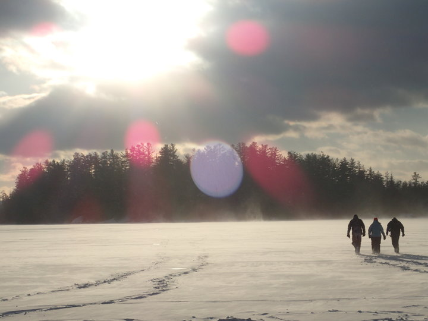

My Wilderness Adventures
Since I was young, I have always loved camping. I have lived in the city my whole life, and while I enjoy an urban atmosphere, it can get stifling. Camping is a way for me to escape the fast-paced life and return to nature. When I go camping, the more remote, the better. I also like to test my limits. That's why my favorite experiences have been wilderness camping.
What is wilderness camping?
Wilderness camping, or high adventure camping, is a program in which a crew completes a trek through wilderness areas, usually for more than a week at a time. In my case, I participated through the Boy Scouts. On these treks, the crew is mostly or entirely cut off from base camp or the outfitter in charge of dispatching crews. It involves physical and survival training, planning an itinerary, and preparing the proper equipment and supplies to complete the journey. Here is an overview of the wilderness camping lands I have visited.
Northern Tier
A view of one of the many lakes in the Northern Tier lands
Northern Tier is a vast area of forests on the Minnesota-Canada border connected by a network of hundreds of lakes. I participated in the summer canoeing program twice, and once in the winter (more on that later). The summer treks lasted about 10 days on the water, stopping on land for meals and to pitch camp at night. Since we would not be returning to base camp until we completed our route, all of our food supplies had to be packed out with us. At times during the route there would not be a viable water route to where we were headed. In these cases we would portage our canoes and packs over land to the next lake, sometimes taking several trips to get everything across.
More>>>
Sea Base
An example of a sailboat used at Sea Base
Sea Base is a sailing progam in the Florida Keys. This trip was by far the most relaxed of the lasted six days, and we launched from the Lower Matecumbe Key. Circling south around the southernmost keys, we stopped in Key West for supplies and some Jimmy Buffett vibes! Along the way we stopped to fish, swim, or snorkel the reefs, once encountering the remains of a sunken barge.
More>>>
Philmont

Mount Baldy, the highest point in Philmont
Philmont Scout Ranch is a 200-mile mountainous wilderness in the back country of New Mexico. The longest trek of them all, our journey through the trails and mountains took us 12 days and over 50 miles. Along the way we encountered abandoned mines, Hopi cliff drawings, and climbed the summit of Mount Baldy, the highest point in the range. For this trip, we did not pack out all of our food in the beginning, as even dehydrated food would be too heavy to carry for that long. Instead we planned a route that would stop at commissary points every 3-4 days to resupply.
More>>>
Okpik

In the winter, the lakes of Northern Tier are completely frozen over
Honestly, this one kind of sucked. Don't get me wrong, I had fun and I'm glad I went, but it got miserable at points. On my third trip to Northern Tier, we went in the winter for their Okpik (pronounced 'oo-pick', the Inuit word for 'snowy owl') program. This time, instead of canoes, we carried our supplies in sleds behind us, and traveled mostly on cross- country skis. It was surreal in a way: the landscape was completely changed. The hot muggy summers I remembered were replaced with subzero icy winds. All the clear lakes were frozen over and covered in over a foot of snow, the ice so thick that most of our traveling and campsites were actually on the lake. During the 5 day hike, we ice fished, built snow shelters, and were fortunate enough to faintly catch the Northern Lights, given that we weren't far north enough to usually see them.
More>>>